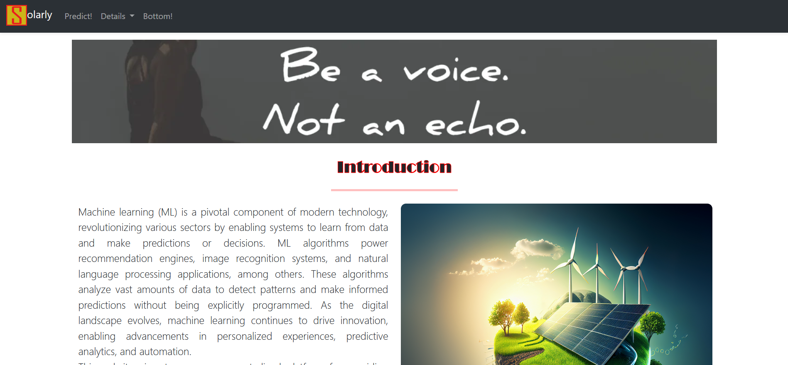
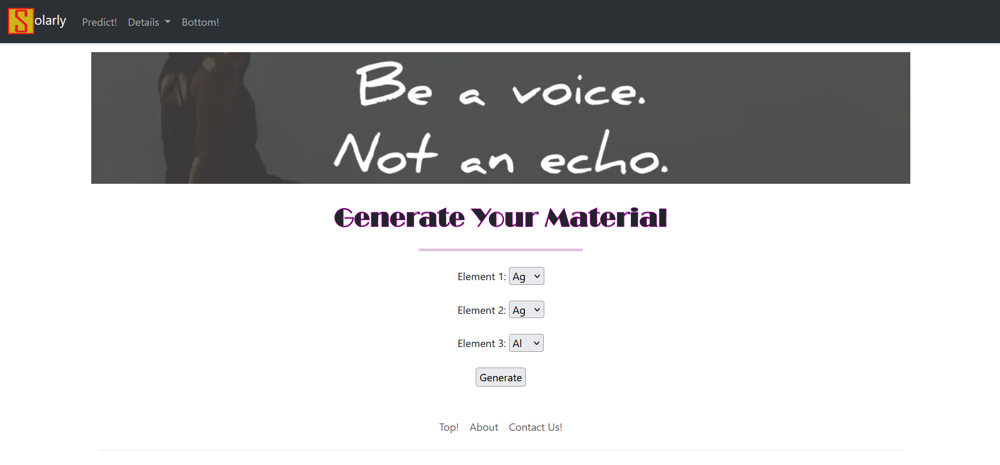
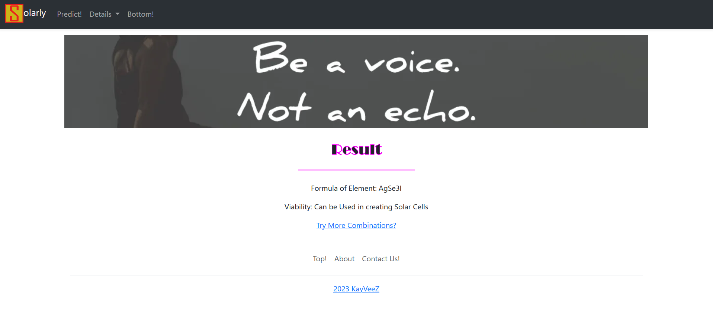
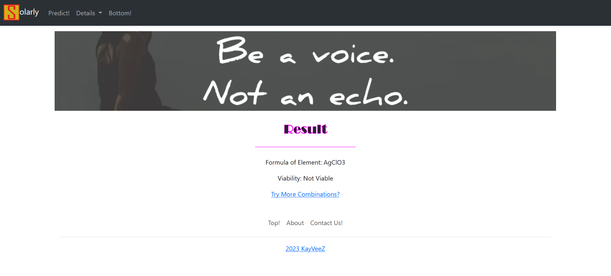
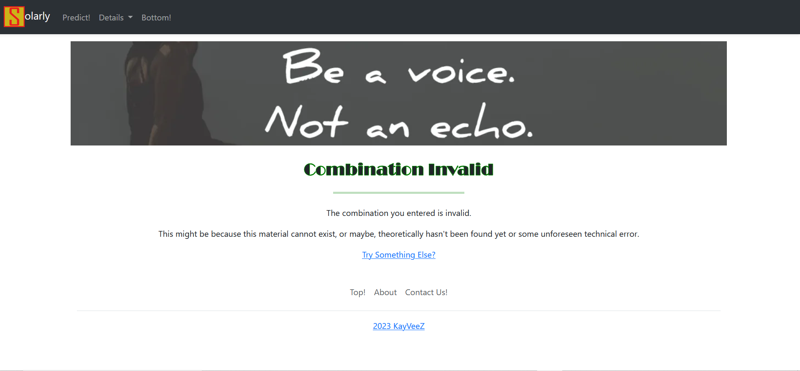

Solarly
by Group 1
Artificial intelligence is not just about machines thinking; it's about machines augmenting human intelligence, revolutionizing industries, and shaping the future of civilization. It's a transformative force that holds the promise of unlocking new frontiers of innovation and solving some of humanity's most pressing challenges.

Welcome to our website dedicated to the deployment of a machine learning model for predicting
the stability of perovskite materials. Perovskites have garnered significant attention in various fields,
including solar cell technology, due to their unique properties. This website focuses on providing users
with a platform to predict whether a given perovskite material is stable enough for use in creating
solar cells.
Project Overview
The website features a Flask-based web application that facilitates the prediction of perovskite stability.
Users can input the chemical composition of a perovskite material, and the application processes this
information using a trained machine learning model. The model outputs a prediction regarding the suitability
of the material for use in solar cells.
Technologies Used
1. Python
2. Flask
3. Pandas
4. Scikit-learn
5. HTML/CSS
Key Features
1. User-Friendly Interface: The website provides an intuitive interface for users to input the chemical composition of perovskite materials.
2. Real-Time Prediction: Utilizing a machine learning model, the website delivers real-time predictions regarding the stability of perovskite materials.
How to use
1. The user can go to the website link.

2. Click on the predict tab in the nav bar. They will be presented with this window:

3. On this window the user can select 3 elements for predicting a material made up of said elements, as we are using a perovskite predictor. Perovskites follow the formula ABX3.
4. After selecting the elements, the user can click on Generate, and if the material theoretically exists, the formula for that material will be sent to the ML predictor and it will send back the output carrying the result of whether it is a viable material or not. For example, in the case of AgSe3I:

5. If, the resulting material is not viable, the result will be not viable. For example: AgClO3

6. If the material is not theoretically possible, the user will be taken to the following window:
